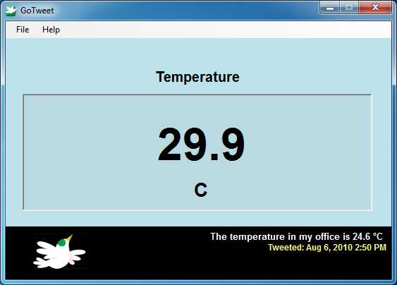

Use
the main window to navigate around the application. Here, you can
monitor the status of a LabQuest, LabQuest Mini, Go!Temp, Go!Motion, or Go!Link device and an
attached
sensor in an analog channel.
Note: Go!Tweet will connect to the
first sensor on the first device it finds. Currently, there is no support for multiple
devices and/or sensors.

The Window:
Name:
The full name of the sensor Go!Tweet is tracking. This is also where
any error messages pertaining to the hardware will be
displayed. This
is also the name that Go!Tweet will use in messages. For more
info on customizing the message of
your tweet, see The
Options Dialog
Reading:
The
current reading of the sensor Go!Tweet is tracking. This value is what
Go!Tweet will use in messages to Twitter.
Units:
The units of the sensor currently being tracked. Currently, there is no
support for conversions to different units. If Go!Tweet is unable to
determine the units of a sensor, the units will be displayed as volts.
Last Tweet
: The
text and time of the last tweet Go!Tweet sent.
Toolbar:
File Menu:
- Tweet Now!: Tweet the
current sensor value. This will not affect
the time left until the next scheduled tweet.
- Search For Devices:
Go!Tweet automatically looks for devices on startup and when USB
devices are attached. Use this option to manually initiate a search for
a LabQuest, LabQuest Mini, Go!Temp, Go!Motion, or Go!Link.
- Options...: Access the Options
Dialog
- Exit: Exit Go!Tweet
Help Menu
- Help: Access the help
pages
- About: View version and
contact info